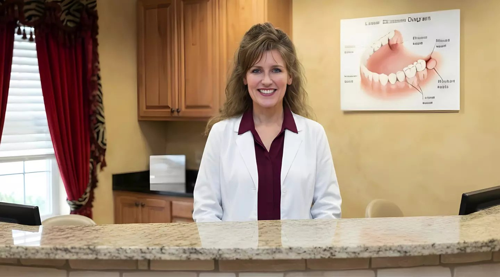
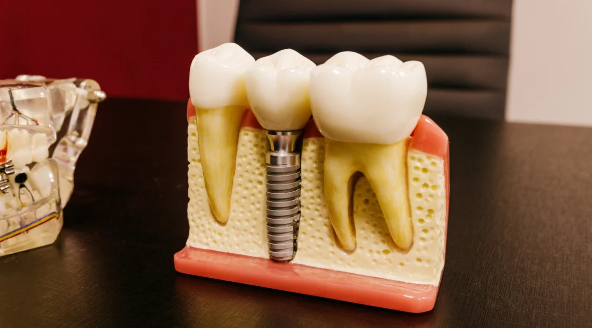
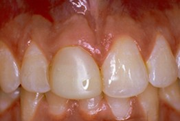
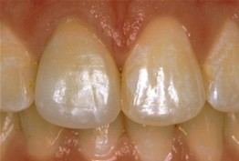
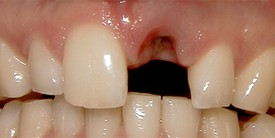
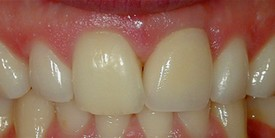

“My regular cleaning and checkup from Dr Ashley went very well. Everyone is so friendly, helpful and professional.”
Pete Labella · 2026 · Read reviewNorth Atlanta Center · Buford, GA
Family and General Dentistry in Buford, GA
From routine exams and cleanings to fillings, sealants, and children's visits, our Buford team helps your family plan the dental care it needs.
You can also talk with us about wisdom teeth and explore restorative or cosmetic options when they fit your goals.

One Buford officeCare for everyday needs and changing smiles
Visiting our Buford office
Directions from nearby cities
A good place to start
Everyday care for every stage of family life
Start with a checkup or cleaning. We can also help you discuss tooth and gum concerns as your needs change.
Start here
Dental exams & checkups
Review your oral health and discuss any changes or concerns.
Explore examsPreventive care
Teeth cleanings
Keep up with preventive visits and care for your teeth and gums.
Explore cleaningsRepair a tooth
Tooth-colored fillings
Ask about repairing a cavity with a restoration planned for your tooth.
Explore fillingsProtect teeth
Dental sealants
Learn when a protective sealant may help reduce the risk of decay.
Explore sealantsFor children
Children's dental visits
Help children build a comfortable routine around checkups and care.
Explore pediatric careGet answers
Wisdom teeth
Have symptoms or questions evaluated before deciding whether removal is needed.
Explore wisdom teethAlso explore gum disease treatment and tooth extraction when an exam shows you need more care.
New to our office?
Your first visit starts with a conversation
Tell us why you are coming in. The team can help you arrange an initial examination and answer questions about forms before your appointment.
Read patient informationAsk about forms
Patient information explains the available forms and what to expect at an initial exam.
Prepare for your visitMore ways we can help
Care beyond the routine
Explore treatment paths for a tooth that needs repair, a missing tooth, or a smile change you have been considering.

Restorative dentistry
Repair and replace
Discuss options for a damaged or missing tooth after an individual exam.
Cosmetic dentistry
Explore smile options
Talk about color, shape, or alignment and which approach may suit your teeth.
Have a dental concern that cannot wait?
Explore emergency dentistry Tell the team what is happening so they can help you plan the next step.
Meet your dentist
Get to know Dr. Ashley Curington
Dr. Curington has practiced dentistry since 1994 and focuses on cosmetic and restorative care alongside comprehensive dental services. She earned her dental doctorate from the University of Alabama at Birmingham and completed a certificate in prosthodontics in 1996.
Dr. Ashley Curington sees patients at our office on Morningside Drive in Buford. Start with a conversation about your oral health and what you would like to address. She can explain suitable next steps after an individual evaluation.
Read Dr. Curington's biographyPatient perspectives
What patients say about visits here
These individual accounts describe different experiences. Your visit and treatment plan will be personal to you.
“I’ve been going to Dr. Ashley for 25 years and my kids have grown up only knowing her kindness, warmth and care!”
J Taylor · 2023 · Read review“Four cleanings and 2 fillings. We love Dr. Ashley and her staff.”
Jillian Vasquez · 2019 · Read reviewBefore and after
Crown and implant treatment examples
See the before-and-after images from two individual cases. Treatment plans and results vary.
Before

After

Before

After

Plan your visit
Find us in Buford
Our Buford office is near the corner of South Lee Street and Morningside Drive, a short drive from the Mall of Georgia. Tell our team what you need when you request an appointment, and we can help plan the right visit.
North Atlanta Center for Cosmetic & Implant Dentistry
1900 Morningside Dr Suite 201Buford, GA 30518
- Monday to Thursday
- 8:00 AM–5:00 PM
- Friday to Sunday
- Closed
- Phone
- (770) 932-1115
Common questions
Plan your next dental visit
These quick answers can help you choose a starting point. The team can discuss details for your own visit.
Can children visit this office?
Yes. North Atlanta Center offers pediatric dentistry at its Buford office. Explore children's dental care or call to describe your child's needs.
What routine dental care can I ask about?
Start with an exam or cleaning. The team can also discuss fillings and sealants when appropriate for your teeth. Explore everyday care.
Do wisdom teeth always need removal?
A dentist can evaluate your symptoms and discuss whether monitoring, removal, or another step makes sense. Read about wisdom teeth.
How do insurance and payment work?
Benefits depend on your plan. We accept cash, check, Visa, Mastercard, and American Express. CareCredit financing is available, subject to provider approval and terms. Ask us to confirm your plan's benefits before treatment. See payment options.
How do I request an appointment or ask about an urgent concern?
Contact the office or call (770) 932-1115. If your dental concern needs prompt attention, describe it to the team so they can help you plan the next step. Explore emergency dentistry.
Your next step
Let's make a plan for your smile
From a routine family visit to questions about a specific tooth, our team is ready to hear what matters to you. Request an appointment or call (770) 932-1115 to plan dental care in Buford.